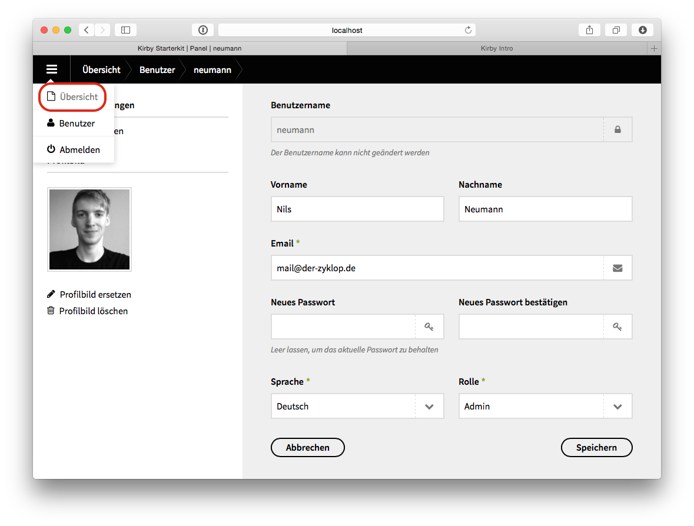

Deine neue Webseite ist fertig gestellt, und du möchtest dir einen grundlegenden Überblick über dein neues Content Management System namens Kirby verschaffen? Dann bist du hier richtig. Diese Seite soll dir den Einstieg zu erleichtern und dir die Möglichkeit geben ab und zu mal nachschlagen zu können, falls nötig. Bei Fragen und Anregungen, freue ich mich auf deine Email an mail@der-zyklop.de. Los gehts...
Du möchtest also Inhalte auf deiner Webseite von Zeit zu Zeit ändern. Dazu melde dich im CMS an. Angenommen die Adresse deiner Webseite sei example.org, dann erreichst du den Login-Bereich unter example.org/panel.
 Gib dort den dir zugeteilten Benutzernahmen und dein Passwort an. Du landest als allererstes auf einer Wilkommens-Seite.
Gib dort den dir zugeteilten Benutzernahmen und dein Passwort an. Du landest als allererstes auf einer Wilkommens-Seite.
Falls du das zum ersten mal siehst, solltest du als allererstes dein Passwort ändern. Klicke dazu auf deinen Account und trage die fehlenden Daten ein und speichere deine Änderungen.
Über das Menü üben links kommst du immer wieder zurück auf die Übersicht.
Schau dir als nächstes die erste Seite an.

Hier kann es schon dir ersten kleineren Unterschiede geben von deiner Webseite und meinen Beispiel-Bildern. Doch der Grundaufbau ist der selbe. Auf der linken Seite hast du die Möglichkeit Unterseiten anzulegen und Dateien wie z.B. Bilder für diese Seite anzulegen, und auf der rechten Seite kannst du Inhalte wie z.B. Texte anpassen.

In der folgenden Aufnahme zeige ich, wie ich eine Bild-Datei, welche auf meinem persönlichen Computer liegt, in die Beispiel-Webseite einbinde.
Nun zeige ich die verschiedenen Möglichkeiten der Text-Formatierung in Kirby.

Manche Menschen vermissen hier im ersten Moment die »Gestaltungsfreiheit«, die sie von weit verbreiteten Textverarbeitungsprogrammen gewohnt sind. Aber das hat einen guten Grund. Das Aussehen der Farben und Formen deiner Texte, sowie die sinnvolle Anordnung der Bilder etc. wurde auf deiner Webseite schon größtenteils vordefiniert. Hast du deine Webseite von einem/einer ausgebildeten, professionellen Designer/in erstellen lassen? Dann hat er/sie sich bereits Gedanken dazu gemacht. Z.B. wie deine Texte am besten dargestellt werden müssen, damit du möglichst viele Menschen, egal ob mit Sehschwäche, körperlichen oder technischen Einschränkungen, erreichen kannst. Designer und Programmierer von Webseiten machen sich täglich Gedanken über diese Fragen. Vertrau ihnen ;)
Zurück auf der Übersich klicke ich auf das kleine Plus-Zeichen bei »Seiten«, und werde anschließend nach einem Titel der anzulegenden Seite gefragt. Sobald ich diese Seite angelegt habe, erscheint sie in meiner Liste der vorhandenen Seiten.

Neu angelegte Seiten können zwar inhaltlich sofort bearbeitet werden, sind aber zur Sicherheit immer erstmal »unsichtbar« (wird nicht im Menü meiner Webseite angezeigt). Klicke ich auf den kleinen Stift neben dem Plus-Zeichen, dann kann ich die Sichtbarkeit der einzelnen Seiten bearbeiten.

Das war’s erstmal. Ich gehe jetzt erstmal nicht weiter in die Tiefe, denn was ab jetzt kommt, erklärt sich entweder von selbst oder bezieht sich nicht auf »Kirby« algemein, sondern speziell auf deine neue Webseite. Aber wie gesagt – wenn noch Fragen offen sind, dann helfe ich gerne.
Schreib mir am besten eine Email.
Beste Grüße,
Nils Neumann